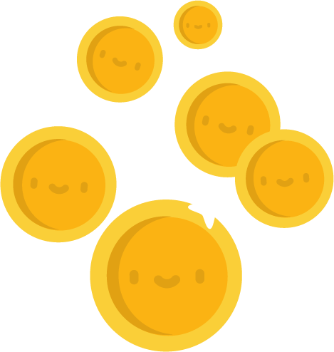
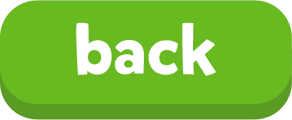

← В тренажёр

0
🔥 ×2
45
Игры со словами
Выбери игру. Слова берутся из юнита, который выбран сверху.
🎈 Лопни слово
Наверху картинка и перевод. Снизу всплывают английские слова — лопай нужное.
🧠 Найди пару
Карточки рубашкой вверх: картинка и её английское слово. Слова выбранного юнита, без таймера, три доски.
Время вышло!
0
очков
0
лучшая серия
0
рекорд
